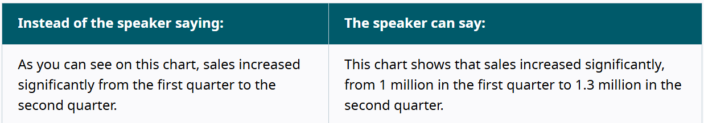

When you are creating content of any kind, it is important to keep your users’ needs in mind from the beginning. This is part of the design philosophy of universal design. A transcript is only as good as the content it is conveying. Therefore, a good transcript starts with thoughtfully-created content.
Integrated description is another part of universal design [link to “universal design”]. It is a design choice that consists of describing important visual content in the main audio (W3). It is especially important to keep this in mind when creating instructive content, like how-to videos, or content which concerns something visual, like explaining graphics on a slideshow.
For example, rather than saying “Select the ‘Home’ tab here,” say “Select the ‘Home’ tab on the left-hand side of the screen,” as that integrates the screen into the audio.
Timestamps can also be useful here, enabling a user to go to a certain time to see if they missed something important and record it.
Example of integrated description in a transcript:
